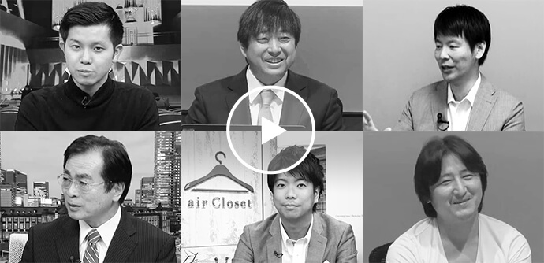
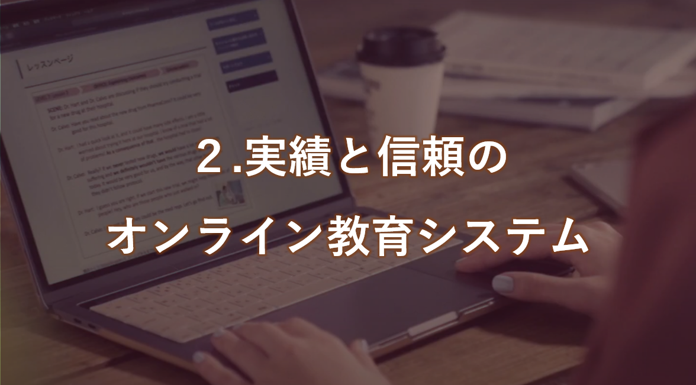
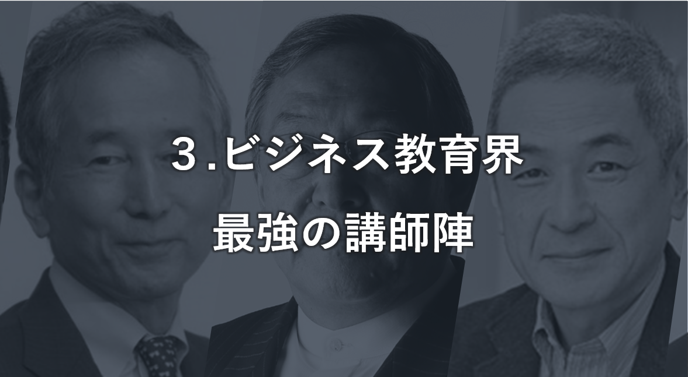
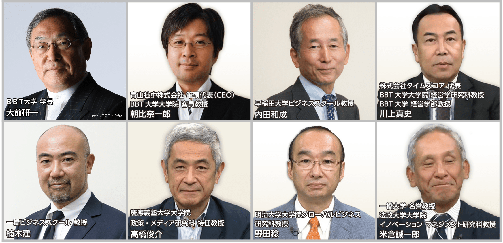
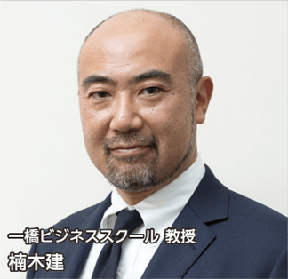
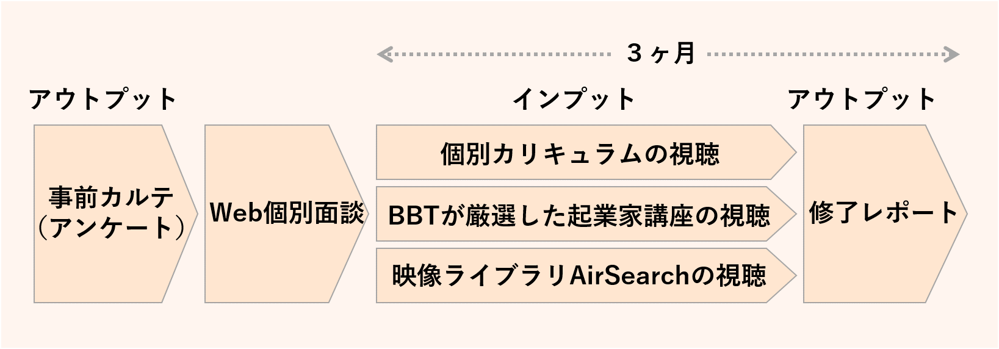
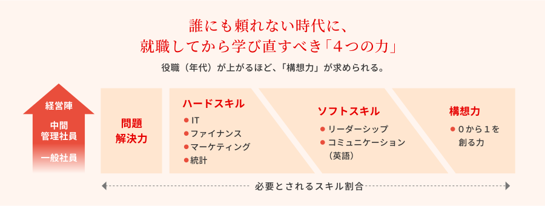
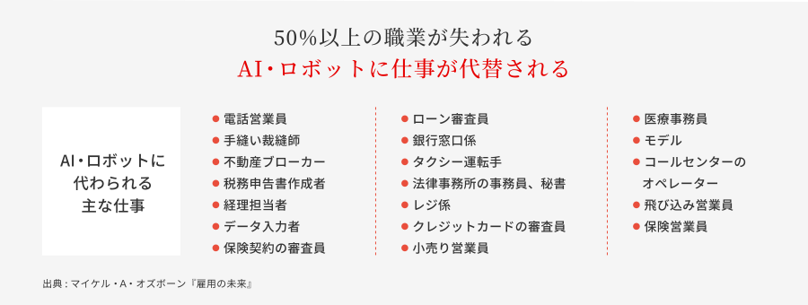
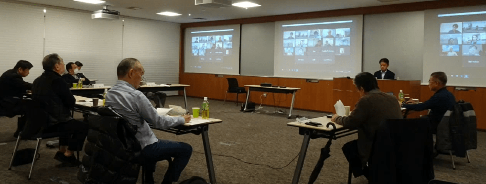
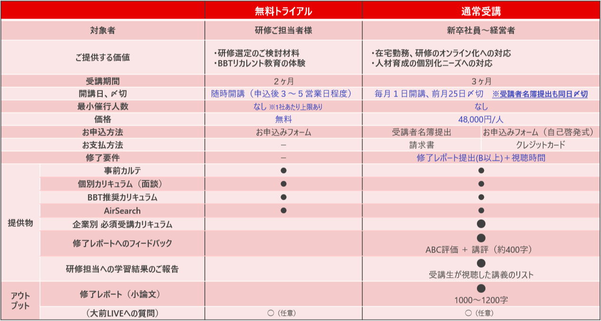

<!DOCTYPE html>
<html>
<head prefix="">
<!-- Google Tag Manager -->
<script>(function(w,d,s,l,i){w[l]=w[l]||[];w[l].push({'gtm.start':
new Date().getTime(),event:'gtm.js'});var f=d.getElementsByTagName(s)[0],
j=d.createElement(s),dl=l!='dataLayer'?'&l='+l:'';j.async=true;j.src=
'https://www.googletagmanager.com/gtm.js?id='+i+dl;f.parentNode.insertBefore(j,f);
})(window,document,'script','dataLayer','GTM-P9J7');</script>
<!-- End Google Tag Manager -->
<meta charset="utf-8">
<meta name="description" content="デジタルディスラプション時代の変化するビジネス環境に応える人材育成。BBTは、オンラインでの学びの特長を最大限に活用し、各世代ごとに求められる最新の育成プログラムをテーラーメイドでご提供します。">
<meta name="keywords" content="パーソナライズ,オンライン研修,動画学習,オンライン学習,研修,階層研修,年次研修,選抜研修,人材育成,リカレント教育,BBT,ビジネス・ブレークスルー,大前研一,個別対応,リーダーシップ,問題解決力,ビジネス英語">
<meta http-equiv="X-UA-Compatible" content="IE=edge">
<meta name="format-detection" content="telephone=no">
<meta name="viewport" content="width=device-width,initial-scale=1.0">
<meta property="og:title" content="個別対応オンライン研修 BBTパーソナライズ | リカレント教育のBBT | 株式会社ビジネス・ブレークスルー（BBT／大前研一代表）"/>
<meta property="og:description" content="新サービス「BBTパーソナライズ」は、ビジネス教育業界トップクラスの講師による珠玉の講義動画6,000時間超から、社員一人ひとりに合わせた個別のカリキュラムをテーラーメードでご提供します。"/>
<meta property="og:url" content="https://www.bbt757.com/recurrent/personalize/"/>
<meta property="og:type" content="website"/>
<meta property="og:site_name" content="BBTパーソナライズ 個別対応オンライン研修 株式会社ビジネス・ブレークスルー（BBT／大前研一代表）"/>
<meta property="og:image" content="./img/ogp.png"/>
<link rel="stylesheet" href="css/common.css">
<link rel="stylesheet" href="css/form.css">
<link rel="stylesheet" href="css/sl.css">
<link rel="shortcut icon" href="img/favicon.ico">
	<title>BBTパーソナライズ 個別対応オンライン研修 | リカレント教育のBBT | ビジネス・ブレークスルー／大前研一代表</title>
</head>
<body id="top">
  <!-- Google Tag Manager (noscript) -->
  <noscript>
      <iframe src="https://www.googletagmanager.com/ns.html?id=GTM-P9J7"
  height="0" width="0" style="display:none;visibility:hidden"></iframe>
  </noscript>
  <!-- End Google Tag Manager (noscript) -->
  <header id="header">
    <div class="headerlogo"> <a href="index.html" class="logo"><span class="icon"></span></a>
      <div class="copy"> 株式会社ビジネス・ブレークスルー <em>ビジネスパーソンに最新の「構想力」を。</em> </div>
    </div>
    <div id="menu">
      <div class="btns"> <a href="https://form.k3r.jp/bbt_recurrent/personalize1mtrial?header" target="_blank" class="btn pic">無料トライアル<span class="forPC"><br>
      </span>お申し込み</a> <a href="https://form.k3r.jp/bbt_recurrent/bbtp20toiawase?header" class="btn inquiry" target="_blank">お問い合わせ</a>
      </div>
    </div>
    <div id="menu_bg"><a href="javascript:void(0);" class="menu_btn"></a></div>
    <a href="javascript:void(0);" class="menu_btn"><span><span></span></span>menu</a> </header>
  <article id="content" class="page">
<!--
    <section id="visual">
      <div class="title"> <span class="copy01">あなたの人生を変える、珠玉の出会いがここに</span>
        <h1> <span class="h1_01">私があなたなら、</span><br>
          <span class="h1_02">この経営者の話を</span><br>
          聞きに行くだろう。 </h1>
        <span class="copy02">〜令和時代に必要な<span class="forSP"><br>
        </span>行動とは〜</span> </div>
      <div class="img kv1_img omae01">  </div>
      <div class="shogakukan">
        <p>撮影/太田真三(小学館)</p>
      </div>

      <a href="#s10">
      <div class="kv_circle">  </div>
      </a>
    </section>
    -->
    <section id="header">
      <div style="text-align:center;">
        
      </div>
    </section>
    <section id="s01" class="setElm">
      <div class="inner" style="text-align:center!important;">
        <!-- <span style="font-size:1.5rem; font-weight:bold;">最強講師で鍛える、<span class="forSP"><br></span>
        ３ヶ月間の"カスタムトレーニング"</span> -->
        <h2>
          <span style="font-size:1.5rem; font-weight:bold; line-height: 0.1em;"><strong>最強講義</strong>で鍛える、３ヶ月間の"カスタムトレーニング"</span>
          <br>
          <em>BBTパーソナライズとは？</em>
          「研修のオンライン化」が<span class="forSP"><br>
          </span>貴社の人材育成をさらに前進させます </h2>
        <p><span>本プログラムは、満足度97%の大人気講座<span class="forSP"><br></span>
          「リカレントスタートプログラム」をさらに受講しやすくした、<span class="forSP"><br></span>
          オンライン完結型の新サービスです。</span>
          <br>
          <span class="forSP"><br></span>
          事前アンケートと個別面談を通じて、<span class="forSP"><br></span>6,000時間を超えるビジネス映像講座から、<span class="forSP"><br></span>一人ひとりに最適なカリキュラムを提供します。
        </p>
      </div>
    </section>

    <section id="s1-02">
      <div class="inner">
        <p class="text-btn"><span>担当者さまでまずは無料トライアルが可能。<br class="forSP">2ヶ月トラアル後にご検討ください。</span></p>
        <a href="https://form.k3r.jp/bbt_recurrent/personalize1mtrial?top" target="_blank">無料トライアルお申し込み</a>
      </div>
    </section>

    <section id="s02" class="setElm">
      <div class="inner">
        <h2> オンライン研修 <span class="forSP"><br></span>BBTパーソナライズ <span style="font-size:1.2em; font-weight:900;">３つ</span>のポイント
        </h2>
        <ul>
          <li> <span class="linemarker">1.貴社の課題に応じたテーラメード・カリキュラム</span><br>
            企業様ごとに課題のレベル感は異なります。BBTパーソナライズでは、カリキュラムプランナーとのヒアリングにより御社に最適な研修をご用意します。</li>
          <li> <span class="linemarker">2.新卒から経営者まで、誰でもどこでもいつでも受講可能</span><br>
            ネット環境があれば自宅でも電車でも会社でもいつどこからでも受講できます。また事前DLしておけばネットがないところでも視聴可能です。コンテンツが他社と比べて豊富なため年齢も肩書きも選びません。</li>
          <li> <span class="linemarker">3.20年の実績と6000時間にわたる信頼のコンテンツが学び放題</span><br>オンライン教育の先駆者として実績ある教育システムに加え、最強講師陣のコンテンツが学び放題。大前研一をはじめとし、実業の現場で経営に携わり最新のビジネスを知り尽くした一流の講師陣が本気で教育コンテンツを作成し更新中。
        </ul>
        <h3> 創業から20年以上に渡るノウハウで、<span class="forSP"><br></span>
          貴社の研修オンライン化をお手伝いします。 </h3>
      </div>
    </section>

    <section id="s1-02">
      <div class="inner">
        <p class="text-btn2"><span>担当者さまでまずは無料トライアルが可能。<br class="forSP">2ヶ月トラアル後にご検討ください。</span></p>
        <a href="https://form.k3r.jp/bbt_recurrent/personalize1mtrial?top" target="_blank">無料トライアルお申し込み</a>
      </div>
    </section>

<!--
    <section id="s03" class="setElm">
      <div class="inner">
        <h2> オンライン教育の先駆者<span class="forSP"><br></span>だからこそ提供できる、<br>
          研修効果を最大化する<font style="color:red; font-size:3.2rem;font-weight:700;">３つ</font>の仕組み </h2>
      </div>
    </section>

    <section id="s04" class="setElm">
      <div class="inner">
        <div class="lead">
          <div class="txt">
            <h2><em>大前研一も学んでいる<span class="forSP"><br>
              </span>「経営者の話」</em>の講義映像が<span class="forSP"><br>
              </span>無料視聴できます。</h2>
            <p>BBTの10,000時間超のプログラムから選び抜いた今すぐ聞くべき<span class="forPC"><br>
              </span>経営者講義が無料ですぐに視聴いただけます。<br>
              「誰にも頼れない時代」に必要な力とは何か、そのヒントを探ってください。</p>
          </div>
          <div class="img"> <a href="#s10"></a> </div>
        </div>
        <div class="moviebtn"> <a class="btn_MOV" href="#s10">経営者講義動画を無料で見る</a> </div>
      </div>
    </section>
-->
    <section id="s05" class="setElm">
      <div class="inner">
        <h2> オンライン教育の先駆者だからこそ提供できる、<br>
          研修効果を最大化する<font style="color:red; font-size:3.2rem;font-weight:700;">３つ</font>の仕組み </h2>
        <div class="lead lower">
          <div class="txt">
            <ul>
              <li>受講生は、6,000時間を超える”超実学”ビジネス講義ライブラリが<span class="linemarker">学び放題</span>。
<span class="forPC"><br>
</span></li>
              <li>さらに、BBTのコンテンツを熟知した「カリキュラムプランナー」が個別のWEB面談を実施。受講生一人ひとりのニーズ・課題に沿った、<br>
              <span class="linemarker">個別対応のカリキュラム</span>をテーラーメードで作成いたします。
              <li>予測できない10年・15年後の経営をけん引する20代から、<span class="forSP"><br></span>現在の経営の基盤を支えるミッドキャリア、<span class="forSP"><br></span>次期役員候補や経営者の育成まで、<br>
              各世代・役職ごとに求められる知識や考え方を最新のものにアップデートすることが可能です。
              </li>
            </ul>
          </div>
          <div class="img"> <!-- <a href="img/s05_2_img_large.png" class="lightbox" rel="lightbox1"><span class="zoom">
            <svg xmlns="http://www.w3.org/2000/svg" viewBox="0 0 15.96 15.97">
              <path d="M15.68,14.3,10.87,9.49A5.94,5.94,0,0,0,12,6a6,6,0,1,0-6,6,5.94,5.94,0,0,0,3.49-1.13l4.81,4.81a1,1,0,0,0,1.38-1.38ZM6,11a5,5,0,1,1,5-5A5,5,0,0,1,6,11Z"/>
            </svg>
            拡大して見る</span></a> --></div>
        </div>
        <div class="lead upper">
          <div class="txt">
            <ul>
              <li>文部科学省認可の100％オンライン大学で活用されている、BBT独自の遠隔教育システム AirCampus®（エアキャンパス）。<br>
                PC、モバイル、Amazon FireTVと、<br>
                <span class="linemarker">デバイスを選ばず学習が可能</span>です。
              </li>
              <li>モバイルアプリでは、<span class="linemarker">講義の事前ダウンロード</span>が可能。<br>
                  Wi-Fiのない海外出張、飛行機の移動時間ですら、学習を継続できます。<br>
                  世界110ヶ国*から、第一線で戦うビジネスパーソンたちが、
                  超実学のビジネスを学んでいます。
                  <span style="font-size:0.8rem;">*2019年度実績</span><br>
                  会社設立から20年以上に渡り、のべ<span class="linemarker">約5万人以上</span>が、
                  時間・場所にとらわれることなく学んできました。
              </li>
            </ul>
          </div>
          <div class="img"> <!-- <a href="img/s05_1_img_large.png" class="lightbox" rel="lightbox1"><span class="zoom">
            <!00<svg xmlns="http://www.w3.org/2000/svg" viewBox="0 0 15.96 15.97">
              <path d="M15.68,14.3,10.87,9.49A5.94,5.94,0,0,0,12,6a6,6,0,1,0-6,6,5.94,5.94,0,0,0,3.49-1.13l4.81,4.81a1,1,0,0,0,1.38-1.38ZM6,11a5,5,0,1,1,5-5A5,5,0,0,1,6,11Z"/>
            </svg>
            拡大して見る</span></a>--> </div>
        </div>
        <div class="lead lower">
          <div class="txt">
            <ul>
              <li>世界的コンサルタントの大前研一をはじめ、<span class="forPC"><br></span><span class="linemarker">各界の経営プロフェッショナル</span>を講師として招聘。</li>
              <li>ビジネス教育界最強の講師陣、先鋭の起業家による珠玉の講義で、ビジネス知識、スキル、マインドを高め、<span class="linemarker">「稼ぐ力」</span>を身につけます。</li>
            </ul>
          </div>
          <div class="img"> <!-- <a href="img/s05_2_img_large.png" class="lightbox" rel="lightbox1"><span class="zoom">
            <svg xmlns="http://www.w3.org/2000/svg" viewBox="0 0 15.96 15.97">
              <path d="M15.68,14.3,10.87,9.49A5.94,5.94,0,0,0,12,6a6,6,0,1,0-6,6,5.94,5.94,0,0,0,3.49-1.13l4.81,4.81a1,1,0,0,0,1.38-1.38ZM6,11a5,5,0,1,1,5-5A5,5,0,0,1,6,11Z"/>
            </svg>
            拡大して見る</span></a> --></div>
        </div>
        <h2 style="padding:10px; text-shadow:0 0 0 black !important; font-size:1.8rem;">BBTパーソナライズで視聴可能な講師の例</h2>
        <div style="text-align:center;">
          
<!--
            
            
            
            
            
            
            
            
-->
        </div>
      </div>
    </section>
    <section id="s06" class="setElm">
      <div class="inner">
        <h2> <em>BBTパーソナライズ<span class="forSP"><br></span> ３ヶ月間の流れ</em> </h2>
        <p style="font-size:2rem; font-weight:500; text-align:center; padding-bottom:1.25em;">３ヶ月間の学びは、以下の流れで進められます。<p>
        <ul>
          <li>自己カルテ提出</li>
          <li>カリキュラムプランナーによる３０分の面談</li>
          <li>個別カリキュラムの提示<span class="forSP"><br></span>
            （標準は20～30時間／月。時間数は研修ご担当者様と相談可能）</li>
          <li>講座の視聴（３ヶ月間）
          <ul>
            <li>個別カリキュラム</li>
            <li>BBT厳選講座（構想力を高める起業家１２０人等）</li>
            <li>映像ライブラリAirSearchの視聴（6,000時間が学び放題）</li>
          </ul>
          <li>修了レポート提出</li>
          <li>研修ご担当者向けに、学習結果のご報告・修了レポートコメント返却</li>
        </ul>
        

<!--
        <div class="lead">
          <div class="txt">
            <p class="p01"> 人材として必要とされる能力は、役職や状況により変化します。 </p>
            <p class="p02"> どの世代・ステージにおいても普遍的に必要な「問題発見・解決力」や、リーダーシップ、コミュニケーション力などの「ソフトスキル」に加え、キャリアのスタート地点であれば、IT、ファイナンス、マーケティング、財務会計などの「ハードスキル」が、中間管理職や経営者、起業家においては、０から１を創る「構想力」が特に必要となります。 </p>
            <p class="p03"> また、変化が大きい時代においては、過去に学んだことや、成功体験が通用しないどころか、足かせとなることがあります。<br>
              <span class="linemarker">過去の成功体験を捨て(Unlearn)、学び直す(Learn)ことが重要</span>となります。 </p>
            <p class="p04"> さらに、大学や大学院で学んだことも、陳腐化するスピードが早くなります。生涯を通じて学び、自分をアップデートし	続ける<span class="linemarker">「リカレント教育」が市場価値を高め続けるための、大きな鍵</span>となります。 </p>
          </div>
        </div>

        <div class="img img01"></div>
        <div class="img img02"></div>
-->
      </div>
    </section>

    <section id="s07" class="setElm">

<!--
      <h2>
        <div class="titInner">
          <div class="img"></div>
          時代の最先端を提供する<br class="forSP">
          BBTの「リカレント教育」 </div>
      </h2>
-->
      <div class="inner">
        <h2> テーラーメード・カリキュラム<span class="forSP"><br></span>
          体験者の声 </h2>
        <div class="lead">
          <div class="txt">
            <p style="font-size:1.5rem;font-weight:500;">2019年7月にスタートした「テーラーメード・カリキュラム」の体験者は延べ271名*。<span style="font-size:1.0rem;">*2020年4月1日現在</span><br>
            幅広い業界、職種、年代、役職の受講生から、ご評価頂いております。
            </p>
          </div>
        </div>
        <ul class="tab-list">
          <!--タブ-->
          <li class="tab is-active">30代前半<br>金融/営業<br>支店長代理</li>
          <li class="tab">30代後半<br>医薬品/営業<br>課長代理</li>
          <li class="tab">40代<br>IT・通信/営業<br>部長</li>
          <li class="tab">40代<br>金融/業務企画<br>管理職</li>
          <li class="tab">50代<br>食品メーカー/経理<br>部長</li>

        </ul>
        <div class="main">
          <!--タブを切り替えて表示するコンテンツ-->
          <div class="content tab01 is-show">
            <div class="contentwrap">
              <h3 class="toggle"><span class="forSP">30代前半 金融/営業 支店長代理</span><span class="forPC">ポイントを絞った学習ができた。また、資格試験より『考え方』を学ぶことが重要であると気付いた。取引先の経営者からも学びの取り組みを評価された。</span></h3>
              <div class="togglewrap">
                <div class="txt">
                  <p><span style="font-weight:700;">◇受講動機</span><br>
                  同支店の支店長より勧めがあり、自分自身の知識向上や、俯瞰する力、大局観を養うためのきっかけとなればと思い受講しました。<span class="forPC"><br><br></span></p>
                  <p><span style="font-weight:700;">◇３ヶ月間の学びを経て感じていること</span><br>
                  学び直しの大切さを感じ、読書等にも積極的に取り組めるようになりました。<br>
                  個別選定講義は、自分に足りない部分や興味のある分野の講義が準備されていたことで、ポイントを絞って視聴することができました。<br>
                  また、お客様と接する中で、生じた課題についてフレームワークを活用し、要件整理を行う癖が身についたと感じています。営業の場面で、本講義内容をアウトプットしたところ、経営者より「面白いこと学んでいるし、他の同業者と違って変化をしっかり勉強しているんだね」と、嬉しい反応を頂いたこともありました。<br>
                  資格試験ではなく、「考え方」を学ぶことが重要であると気付きました。 </p>
                </div>
              </div>
            </div>
          </div>
          <div class="content tab02">
            <div class="contentwrap">
              <h3 class="toggle"><span class="forSP">30代後半 医薬品/営業 課長代理</span><span class="forPC">経営者の講義から、環境が変わったと認識した。<br>また、学び続ける癖がついた。</span></h3>
              <div class="togglewrap">
                <div class="txt">
                  <p><span style="font-weight:700;">◇受講動機</span><br>
                  MBA課程の時の学ぶ姿勢を思い出すため、受講しました。<span class="forPC"><br><br></span></p>
                  <p><span style="font-weight:700;">◇３ヶ月間の学びを経て感じていること</span><br>
                  AirSearchからセレクションいただいた経営者の講義を視聴し、ここ数年で大きく環境が変わったと認識しました。<br>
                  また、学び続ける癖がついたことは、今後も大いに活かせると感じています。
                </div>
              </div>
            </div>
          </div>
          <div class="content tab03">
            <div class="contentwrap">
              <h3 class="toggle"><span class="forSP">40代 IT・通信/営業 部長</span><span class="forPC">俯瞰的な観点の講義で、普段から感じていたことも体系的に言語化できた。自分が管掌する部の予算や中期計画でも自然と活用できている。</span></h3>
              <div class="togglewrap">
                <div class="txt">
                  <p><span style="font-weight:700;">◇受講動機</span><br>
                  以前の上司からの紹介で、俯瞰的なものの見方やゼロから１を生み出す発想力の鍛え方を身に着けたいと考え、申込みました。<span class="forPC"><br><br></span></p>
                  <p><span style="font-weight:700;">◇３ヶ月間の学びを経て感じていること</span><br>
                  初めての人間でもシステムが使いやすく、Air Searchのコンテンツの量や質が圧倒的で、勉強になるものが多かったです。<br>
                  さまざまなテーマに対し、俯瞰的な観点あるいは普遍化して解説されたものが多く、自身の知見を広げる上で大いに役立つとともに普段から感じていたことも体系的に言語化されていたので腹落ちしました。<br>
                  現在、自分が管掌する部の予算や中期計画を纏めていますが、本質的問題の抽出や解決にあたるMECE、SoWhatなど自然に使うことができていると感じます。</p>
                </div>
              </div>
            </div>
          </div>
          <div class="content tab04">
            <div class="contentwrap">
              <h3 class="toggle"><span class="forSP">40代 金融/業務企画 管理職</span><span class="forPC">何を今自分がすべきか、漠然と悩んでいたことに、ダイレクトに響く講義を多数紹介いただいた。自分の潜在意識が欲していた学びを得たことで、自信につながっている。</span></h3>
              <div class="togglewrap">
                <div class="txt">
                  <p><span style="font-weight:700;">◇受講動機</span><br>
                  現状の自分に漠然とした限界を感じており、壁を越えるきっかけを探していました。勤務先にて受講者募集があり、前向きに議論できる力をつけるため、ベースとなる考え方や行動のヒントがつかめればと期待して応募しました。</p>
                  <p><span style="font-weight:700;">◇３ヶ月間の学びを経て感じていること</span><br>
                  受講前に期待していた以上の、コンテンツ・プログラムでした。
                  漠然と悩んでいたこと、学びたいと思っていたことに、ダイレクトに響く講義を多数紹介いただいたことで、自分が何を壁に感じていたのか、またその壁を超えるためにどう自分を変えていけばよいかのヒントをつかめました。
                  例えば、「リーダーシップの心理学（講師:川上 真史）」で学んだ、リーダーの定義・役割を自分の言葉で職場内で共有したところ、実際に、何人かの行動が良い方向に変わりました。<br>
                  また、同じ職場で複数名が受講していましたが、Web上だけではなく、リアルの空間でも、本プログラムのコンテンツやRTOCS*について語る機会が多くあり、その環境に大きな価値を感じました。同じ職場の人と本プログラムで学んだことを共有することで、さらに学びがブラッシュアップされる実感がありました。<span style="font-size:0.8em;">（*BBT注：RTOCSは「リカレントスタートプログラム」等で実践するケーススタディ。本講座では視聴のみ）</span><br>
                  さらに、起業家・経営者の講義からは「こんな発想があったのか」とヒントを得るとともに、経営者の方の熱量に触れ、私自身もそうありたいとモチベーション向上につながりました。実際に私自身の考え方や行動が変わりつつあると実感し、わくわくする期待も感じ始めています。自分の潜在意識が欲していた学びを得たことで、自信につながっています。</p>
                </div>
              </div>
            </div>
          </div>
          <div class="content tab05">
            <div class="contentwrap">
              <h3 class="toggle"><span class="forSP">50代 食品メーカー/経理 部長</span><span class="forPC">これまでタイトルだけ斜め読みしていた自分の専門外、関心外のニュースに対して、納得したり反対に自分の意見を考えるようになり、世の中の動きがより広く分かるようになった。</span></h3>
              <div class="togglewrap">
                <div class="txt">
                  <p><span style="font-weight:700;">◇受講動機</span><br>
                  会社の研修プログラムへの推薦を受け、様々な変化に対応できるよう、また、これまでの経験値だけではなく、真の課題を見つけ、解決できるような能力を身につけたいと思い、受講しました。</p>
                  <p><span style="font-weight:700;">◇３ヶ月間の学びを経て感じていること</span><br>
                  経営者の講義を視聴し、起業し、成功する人は人とは違った視点を持っており、何らかの気づきがある。更に何かに気付ける人は世の中を変えることが出来る。いつもと違う視点で見ることも必要と感じました。<br>
                  「大前研一ライブ」では、これまでタイトルだけ斜め読みしていた自分の専門外、関心外のニュースも学長の解説を聞いて、納得したり反対に自分の意見を考えるようになり、世の中の動きがより広く分かるようになりました。<br>
                  所属する部の打合せは、ディスカッションを意識し、皆で知恵を出し合うように変えてみました。また、「今の仕事（経理）の大部分はいずれIT化される、では何をすべきか」という意識が高まりました。<br>
                  3ヵ月で学んだことがきちんと身についたとは言えませんが、間違いなく影響を受けました。受講して気づいたことは実践することで自分のものになると考えます。今後も継続して学びながら、仕事や人生に活用していきたいと思います。</p>
                </div>
              </div>
            </div>
          </div>
<!--
          <div class="content tab04">
            <div class="contentwrap">
              <h3 class="toggle">いつでもどこからでも<br>
                参加できるオンライン教育</h3>
              <div class="togglewrap">
                <div class="txt">
                  <p> BBTが提供するリカレント教育は、働きながら学習できるようオンライン教育で受講可能です。独自開発の遠隔教育システム「AirCampus®」を活用し、試験のサポートや講義受講はもちろんのこと、集団学習や講師からの直接指導が受けられます。<br>
                    また、世界99か国からのべ2万人が受講しており、時間や場所にとらわれずにフレキシブルにプログラムに参加することを実現しています。 </p>
                </div>
                <div class="img">  </div>
              </div>
            </div>
          </div>
-->
        </div>
      </div>
    </section>


<!--
    <section id="s08" class="setElm">
      <div class="inner">

        <div class="title">--> <!--<span class="copy01">大前研一も学んでいる。</span>-->
<!--
          <h2> <span class="h2_01">私があなたなら、</span><br>
            <span class="h2_02">この経営者の話を</span><br>
            聞きに行くだろう。 </h2>
        </div>
      </div>
    </section>
-->
    <!-- <section id="s09">
      <div class="inner">
        <h2>最高品質は、<span class="forSP"><br></span>こうして生まれます。</h2>
          <div class="lead">
            <p>BBTの学習コンテンツが評価される理由。<br>
              それは、単に流行を追うのではなく、<span class="forSP"><br></span>「ビジネスの本質」に迫るから。</p>
            <p>徹底的に品質を重視し、<span class="forSP"><br></span>他にない「出会い」を届けます。</p>
          </div>
          <div class="description">
            <h2><span style="font-size:1.8rem;">日本最高峰のビジネスエグゼクティブによる</span><br>
              「コンテンツ会議」</h2>
            <p>BBTの学習コンテンツは、経営者、大学教授、コンサルティングファーム代表を中心に構成された「コンテンツ会議」で企画・立案されます。</p>
            <p>さらに、視聴者からアンケート調査で意見を伺い、その上で必要とするコンテンツをつくり出しています。</p>
            <p>また、講師は一流の経営コンサルタント、ビジネススクール教授、起業家、経営者が担当し、ビジネスのノウハウを惜しみなく伝授しています。</p>
            <div style="text-align:center; margin-bottom:1rem;"><a href="https://www.bbt757.com/company/committee.html" target="_blank">コンテンツ会議委員一覧</a></div>
            
          </div>
          <div class="description">
            <h2><span style="font-size:1.8rem;">効率化・品質向上を追求した</span>
              <br>「自社制作」</h2>
            <p>企画・立案されたコンテンツは、自社スタジオで制作します。<br>
              経験豊かなスタッフが撮影から、演出、編集まで一貫して行います。</p>
            <p>自社スタジオを保有し、コンテンツの一貫生産にこだわることで、<br>
              質の高いコンテンツをタイムリーかつローコストで、安定的に制作することを可能にしています。</p>
            <p>自社スタジオでは、経験豊かなスタッフが視聴者を飽きさせないカメラワークや、取材映像の挿入、テロップの表示など、コンテンツ配信に必要とされる技術を駆使して映像を制作しています。</p>
            
        </div>
      </div>
    </section> -->

    <section id="s10" class="form">
      <div class="inner" >
        <div id="K3_container" class="container">
          <!-- headline -->
          <div id="K3_headline" class="form-headline">
            <h2>まずは、ご体感ください。
              <br>
              <em>研修ご担当者様向け <span class="forSP"><br></span>２ヶ月間の無料トライアル受付中</em></h2>
          </div>
          <div id="K3_headline" class="description">
            <p>20年以上に渡りオンラインでの人材教育を手掛けてきたBBTは、「なぜもっと早く取り組まなかったのだろう」という受講生の声を、数多く伺ってきました。

            <p>一方、我々は「オンラインでの人材育成」が、はじめはなかなかイメージしづらいものであることも、よく理解しています。

            <p>ただ今、人事部・事業部の研修ご担当者様を対象に、２ヵ月間の無料トライアルを実施しています。
              ぜひBBTの珠玉の学習コンテンツを体感いただき、今後の研修計画にお役立てください。

            <p>以下の無料トライアルお申込み先に必要事項を記入いただければ、３～５営業日にて受講を開始できます。</p>
            <p>また、BBTパーソナライズの詳細等につきましても、以下よりお問い合わせください。</p>
            <p><span style="font-size:1rem;">（弊社と同業界のかたは、審査の上お断りさせて頂くことがございますのでご了承ください）</span></p>
            <br>
            <div class="freetrial-wrapper">
              <p><strong>■ 無料トライアル プログラム内容</strong></p><br>
              <p><strong>＜無料トライアルで体験いただけるサービス＞</strong><br>
                <small>・自己カルテ提出<br>
                ・カリキュラムプランナーによる３０分の面談<br>
                ・推奨カリキュラムの提示（時間数は人事部と設定。標準は２０－ ３０時間／月）<br>
                ・個別カリキュラム以外にＢＢＴ推奨カリキュラムあり（起業家１００人、ＤＸ系等）</small></p>
              <br>
              <p><strong>＜無料トライアル中の条件変更のあるサービス＞</strong><br>
                <small>・受講生は推奨カリキュラムをもとにエアサーチで検索、視聴（３ケ月）　<br>
                　→２ヶ月に変更</small></p>
              <br>
              <p><strong>＜無料トライアルでご提供しないサービス＞</strong><br>
                <small>・修了レポート提出<br>
                ・研修ご担当者向けに、学習結果のご報告<br>
                　（提示したカリキュラムとその視聴実績、修了レポート採点、コメント）</small></p>
              <br>
              <p class="freetrial-title"><strong>無料トライアル、通常受講 比較表</strong></p>
              
            </div>
          </div>
        </div>
      </div>
    </section>

    <section id="s10-02">
      <div class="inner">
        <div class="redbtn">
          <a href="https://form.k3r.jp/bbt_recurrent/personalize1mtrial?middle" target="_blank">無料トライアルお申し込み</a>
        </div>
        <div class="blackbtn">
          <a href="https://form.k3r.jp/bbt_recurrent/bbtp20toiawase?middle" target="_blank">講座のお問い合わせはこちら</a>
      </div>
    </div>
  </section>

<!--
  <section id="s10" class="form">

      <div class="inner" >
        <div id="K3_container" class="container">
          <hr/>
          <form action="https://form.k3r.jp/bbt_csbb/recurrent19001" method="POST" id="form-validation">
            <fieldset>
              <div class="form-group control-group">
                <label class="control-label" for="input1">
                  <span class="label-fit label-danger">必須</span><span class="text-top text-bold">お名前（漢字）</span>
                </label>
                <div class="controls">
                  <span style="display:flex;">
                  <input type="text" class="kanji_last_name_auto_kana form-control inline mright1 w50 required" id="input1" name="f_item_name_last" placeholder="お名前（漢字） - 姓" autocomplete="" value="" aria-required="true" required="required">
                  <input type="text" class="kanji_first_name_auto_kana form-control inline w49 required" id="input1" name="f_item_name_first" placeholder="お名前（漢字） - 名" autocomplete="" value="" aria-required="true" required="required">
                  </span>
                </div>
              </div>
              <div class="form-group control-group">
                <label class="control-label" for="input2">
                  <span class="label-fit label-danger">必須</span><span class="text-top text-bold">メールアドレス（動画URL送付先）</span>
                </label>
                <p class="help-block">動画URLを送付するメールアドレスをご入力ください。</p>
                <div class="controls">
                  <span>
                    <input type="text" class="form-control w100 required" id="input2" name="f_item_mail" placeholder="メールアドレス（動画URL送付先）" autocomplete="" value="" aria-required="true" required="required">
                    <input type="hidden" name="mail_chk_onoff" value="off">
                  </span>
                </div>
              </div>
              <div class="form-group control-group">
                <label class="control-label" for="input3">
                  <span class="label-fit label-danger">必須</span><span class="text-top text-bold">ご年齢</span>
                </label>
                <p class="help-block">今後のマーケティングの参考として使用させていただきます</p>
                <span>
                  <select class="form-control required" id="inputf_item_drop1" name="f_item_drop1[]" aria-required="true" required="required">
                    <option value="" selected="">＜選択して下さい＞</option>
                    <option value="18歳未満">18歳未満</option>
                    <option value="18～22歳">18～22歳</option>
                    <option value="23～29歳">23～29歳</option>
                    <option value="30代">30代</option>
                    <option value="40代">40代</option>
                    <option value="50代">50代</option>
                    <option value="60代〜">60代〜</option>
                  </select>
                </span>
              </div>
-->
              <!-- privacy policy -->
<!--
              <div id="K3_privacy_policy" class="well">
                <div class="note privacy_policy">
                  【個人情報の取扱いについて】<br>
                  事業者の氏名または名称<br>
                  株式会社ビジネス・ブレークスルー<br>
                  <br>
                  個人情報保護管理者<br>
                  執行役員　徳永裕司<br>
                  <br>
                  個人情報の利用目的<br>
                  ご入力いただいた個人情報は、下記目的のために利用致します。<br>
                  <br>
                  ①メールマガジンの配信<br>
                  ②説明会・各種キャンペーン、イベントに関する情報提供<br>
                  ③各種応募の抽選、当選時の景品の発送<br>
                  ④当社が運営するサービスに関する情報及びその他有用な情報等の提供<br>
                  ⑤各種統計処理<br>個人情報の提供について<br>
                  取得した個人情報は法令に基づく場合を除き第三者に提供することはありません。<br>
                  <br>
                  個人情報の取扱いの委託について<br>
                  取得した個人情報の全部又は、一部を前述以外の目的で委託することはありません。<br>
                  <br>
                  開示対象個人情報の開示等および問い合わせ窓口について<br>
                  ご本人からの求めにより、当社が保有する開示対象個人情報の利用目的の通知・開示・内容の訂正・追加または削除・利用の停止・消去および第三者への提供の停止（「開示等」といいます。）に応じます。開示等に関する窓口は、以下の「お問合せ先」をご覧下さい。<br>
                  <br>
                  個人情報を入力するにあたっての注意事項<br>
                  個人情報の提供は任意ですが、正確な情報をご提供いただけない場合、正確な処理およびご連絡などが行われない場合がありますので、予めご了承下さい。<br>
                  <br>
                  本人が容易に認識できない方法による個人情報の取得<br>
                  当社は、個人を特定しない情報として、Cookie、WEBビーコンを利用しております。<br>
                  <br>
                  Cookieについて<br>
                  本ウェブサイトには、お客さまに一層便利にご利用いただくため、一部のページで「Cookie」という技術を使用しています。Cookieにより、ウェブサイトはお客さまのコンピュータを識別することができるようになりますが、お客さまのお名前、ご住所、電話番号、メールアドレスといった個人を特定可能な情報を取得することは一切ありません。 お客さまは、ご利用いただくブラウザの設定によりCookieの受け取りを拒否したり、Cookieを受け取ったときに警告を表示させたりすることができます。<br>
                  <br>
                  ウェブビーコン（web beacon)の使用について<br>
                  当社は、お客さまのサイトのご利用状況を調査するためにウェブビーコンを使用する場合がありますが、これによりお客さまのお名前、ご住所、電話番号、メールアドレスといった個人を特定可能な情報を取得することは一切ありません。<br>
                  <br>
                  個人情報の安全管理措置について<br>
                  取得した個人情報については、漏洩、減失またはき損の防止と是正、その他個人情報の安全管理のために必要かつ適切な措置を講じます。このサイトは、SSL（Secure Socket Layer）による暗号化措置を講じています。<br>
                  <br>
                  個人情報保護方針<br>
                  当社ウェブサイトの個人情報保護方針をご覧下さい。<br>
                  https://www.bbt757.com/company/privacy.htm<br>
                  <br>
                  お問合せ先<br>
                  株式会社ビジネス・ブレークスルー　個人情報 苦情・相談窓口<br>
                  〒102-0084　東京都千代田区二番町3番地 麹町スクエア2F<br>
                  TEL：03-6271-0757　FAX：03-3265-1381<br>
                  ◎TELによるお問合せ受付時間：平日（月～金）10:00～17:00
                </div>
              </div>
-->
              <!-- ↓↓↓必須↓↓↓ -->
<!--
              <input type="hidden" name="api_key" value="f2ddfd03d33cfc74d30187d47eca4f7c53cba60a" />
              <input type="hidden" name="opt" value="1" />
-->           <!-- メール配信 承諾=1 未承諾=0 -->
<!--
              <input type="hidden" name="red" value="https://www.bbt757.com/recurrent/thanks.html" />
-->
              <!-- ↓↓↓オプション↓↓↓ -->
<!--
              <input type="hidden" name="red_error" value="https://www.bbt757.com/recurrent/error.html" />
-->
              <!-- ↓↓↓テストモード↓↓↓ -->
              <!-- APIフォームの動作テストをしたい場合は｢false｣を｢true｣にしてください。 -->
              <!-- テストモードでは実際のフォーム登録は行われませんが自動返信メール等は送信されます。 -->
<!--              <input type="hidden" name="test_mode" value="false" />
-->
              <!-- テストモードにおいて、フォーム登録が正しく行えることを確認したい場合にご使用ください。 -->
<!--              <input type="hidden" name="test_mail" value="" />
-->
              <!-- form submit -->
<!--
              <div id="K3_control_btn" class="control-group">
                <div class="controls">
                  <input type="submit" id="k3_to_check_input" name="check_input" class="btn btn-primary" value="プライバシーポリシーに同意して次へ »">
                  <input type="hidden" name="k3_form_state" value="check_input">
                </div>
              </div>
            </fieldset>
          </form>
        </div>
      </div>
    </section>
-->
    <section id="s11" class="setElm">
      <div class="inner">
        <div class="label"> <em>講座概要</em> </div>
        <div class="secInner s11-01">
          <div class="txt"> <span class="sub01">最強講義で鍛える、３ヶ月間の"カスタムトレーニング" </span>
            <h2><em>BBTパーソナライズ</em></h2>
          </div>
        </div>
        <div class="secInner s11-02">
          <div class="lead">
            <div class="txt">
              <p><strong>名称</strong><br>
                「ＢＢＴパーソナライズ」</p>
              <p><strong>■対象者</strong><br>
                若手社員～経営トップまで※別途、新入社員向けサービスをご用意しております。</p>
              <p><strong>■受講費</strong><br>
                ３ヵ月間48,000円（税抜）</p>

              <p><strong>■開講日</strong><br>
                毎月１日開講</p>

              <p><strong>■お申込み期限</strong><br>
                前月25日まで<br>
                ※受講者名簿提供による一括ID発行をご希望の場合は、同日までに受講者名簿をご提出ください。</p>

              <p><strong>■プログラム内容</strong><br>
                ・自己カルテ提出<br>
                ・カリキュラムプランナーによる３０分の面談<br>
                ・推奨カリキュラムの提示<br>
                　（時間数は人事部と設定。標準は２０－３０時間／月）<br>
                ・個別カリキュラム以外にＢＢＴ推奨カリキュラムあり（起業家１００人、ＤＸ系等）<br>
                ・受講生は推奨カリキュラムをもとにエアサーチで検索、視聴（３ケ月）<br>
                ・修了レポート提出<br>
                ・研修担当者向けに、学習結果のご報告（提示したカリキュラムとその視聴実績、論文採点、コメント）</p>

              <p><strong>■分野例</strong><br>
                ・経営基礎　　　：会計、財務、マーケティング、経営戦略、人材マネジメント等<br>
                ・基礎スキル　　：ロジカルシンキング、リーダーシップ、ファシリテーション、コーチング等<br>
                ・経営テーマ　　：デジタル・トランスフォーメーション、サブスクリプション、グローバリゼーション等<br>
                ・イノベーション：構想力、発想力、デザイン思考、新規事業、オープンイノベーション等<br>
                ・テクノロジー　：ＡＩ、IoT、ブロックチェーン、量子コンピューティング、5G、デジタルツイン<br>
                ・その他、１０００人以上の経営者・起業家講義、ＤＸ事例、クロステック事例、海外先端事例</p>
               
              <p><strong>■個別カリキュラム例</strong><br>
              ・若手：ロジカルシンキング、マーケティング、会計、財務、ＡＩ等テクノロジー基礎、起業家講義<br>
              ・課長：人材マネジメント、コーチング、リーダーシップ、ＡＩ等テクノロジーのビジネス応用、ＤＸ<br>
              ・部長：構想力、発想力、ビジョン構築、組織マネジメント、経営者講義、リベラルアーツ</p>

              <p><strong>■講義視聴方法</strong><br>
              ・PC、スマートフォン・タブレット（iOS, Androidアプリ）、Amazon Fire TV</p>
            </div>
          </div>
        </div>
      </div>
    </section>
<!--
    <section id="s12">
      <div class="inner">
        <div class="title">
          <h2><em>BBTの公開リカレント<span class="forSP"><br>
            </span>セミナー情報</em></h2>
          <p>まずはセミナーで最適な教育方法をお選びください。</p>
        </div>
        <div class="secInner">
          <ul>
            <li>
              <h3>BBT大学経営学部</h3>
              <p class="ex">BBT大学教員による特別公開ワークショップ<br>
                マナカク! ～学び直し革命～</p>
              <p class="link_btn"><a href="https://bbt.ac/news/news/009538.html" target="_blank">Read more</a></p>
            </li>
            <li>
              <h3>BBT大学大学院（MBA）</h3>
              <p class="ex">大前研一はじめ、有名講師の記事が無料で読める！<br>
                マネジメントとビジネストレンドの知見を得るMBAメディア</p>
              <p class="link_btn"><a href="https://media.ohmae.ac.jp/" target="_blank">Read more</a></p>
            </li>
            <li>
              <h3>Leadership Action Program</h3>
              <p class="ex">『大前研一 編著 自らの人生の舵を取れ！』プレゼント<br>
                リーダーシップ・アクションプログラム無料ガイダンス</p>
              <p class="link_btn"><a href="https://leadership.ohmae.ac.jp/guidance/" target="_blank">Read more</a></p>
            </li>
            <li>
              <h3>実践ビジネス英語講座<br>
                [PEGL]</h3>
              <p class="ex">【ビジネス英語力診断】３分間で、<br>
                あなたのビジネス英語力を無料診断</p>
              <p class="link_btn"><a href="https://www.ohmae.ac.jp/ex/english/biztest/" target="_blank">Read more</a></p>
            </li>
            <li>
              <h3>問題解決力トレーニング<br>
                プログラム</h3>
              <p class="ex">【大前研一 ニュースの視点Blog】<br>
                注目ニュースを大前研一が解説。<br>
                無料メールマガジンは配信登録数17万!</p>
              <p class="link_btn"><a href="http://www.lt-empower.com/ohmae_blog/" target="_blank">Read more</a></p>
            </li>
            <li>
              <h3>問題解決力トレーニング<br>
                プログラム</h3>
              <p class="ex">毎日10分！月々1,000円で学び続ける新サービス！</p>
              <p class="link_btn"><a href="https://www.lt-empower.com/bbt_routine/" target="_blank">Read more</a></p>
            </li>
            <li>
              <h3>株式・資産形成実践講座</h3>
              <p class="ex">【公開セミナー・ワークショップ】<br>
                受講生以外の方でもお申込み可能な、<br>
                公開セミナー・ワークショップ</p>
              <p class="link_btn"><a href="https://asset.ohmae.ac.jp/news/event/" target="_blank">Read more</a></p>
            </li>
-->
            <!-- 			      <li>
  					<h3>実践ビジネス英語講座<br>[PEGL]</h3>
  					<p class="ex">【ビジネス英語力診断】３分間で、<br>あなたのビジネス英語力を無料診断</p>
  					<p class="link_btn"><a href="https://www.ohmae.ac.jp/ex/english/biztest/" target="_blank">Read more</a></p>
  				  </li>
  				  <li>
  					<h3>問題解決力トレーニング<br>プログラム</h3>
  					<p class="ex">【大前研一 ニュースの視点Blog】<br>注目ニュースを大前研一が解説。<br>無料メールマガジンは配信登録数17万!</p>
  					<p class="link_btn"><a href="http://www.lt-empower.com/ohmae_blog/" target="_blank">Read more</a></p>
  				  </li> -->
<!--
          </ul>
        </div>
      </div>
    </section>
-->
  </article>
  <footer>
    <div id="inquiryBlock">
      <div class="btnarea">
        <ul>
          <li><a class="blackbtn" href="https://form.k3r.jp/bbt_recurrent/bbtp20toiawase?bottom" target="_blank">お問い合わせはこちら</a></li>
<!--          <li><a class="blackbtn" href="https://www.bbt757.com/business/" target="_blank">法人の方はこちら</a></li>
-->
        </ul>
      </div>
      <div class="mailinfo">
        <p class="mail"><a href="mailto:recurrent@bbt757.com" target="_blank">recurrent@bbt757.com</a></p>
      </div>
    </div>
    <article id="content" class="footerBtn">
      <section id="s1-02">
        <div class="inner">
          <a href="https://form.k3r.jp/bbt_recurrent/personalize1mtrial?top" target="_blank">無料トライアルお申し込み</a>
        </div>
      </section>
    </article>
    <div class="footerInner">
      <div class="credit">
        <div class="logoarea">
          <div class="logo"></div>
          <div class="copy"> 株式会社ビジネス・ブレークスルー（BBT） </div>
        </div>
        <div class="policy"> <a href="https://www.bbt757.com/privacy.html" target="_blank">プライバシーポリシー</a> </div>
      </div>
      <div class="copyright"> Copyright © Business Breakthrough Inc. All Right Reserved. </div>
    </div>
  </footer>
  <a href="#top" class="pageTop"></a>
  <script type="text/javascript" src="js/lib/jquery-3.2.0.min.js"></script>
  <!-- <script type="text/javascript" src="js/lib/imagesloaded.pkgd.min.js"></script> -->
  <script type="text/javascript" src="js/lib/jquery.easing.min.js"></script>
  <script type="text/javascript" src="js/lib/simple-lightbox.js"></script>
  <script type="text/javascript" src="js/common.js"></script>
  <script>
    $(document).ready(function() {
  	$('a[rel="lightbox1"]').simpleLightbox();
  	$('a[rel="lightbox2"]').simpleLightbox();
    });
  </script>
</body>
</html>
